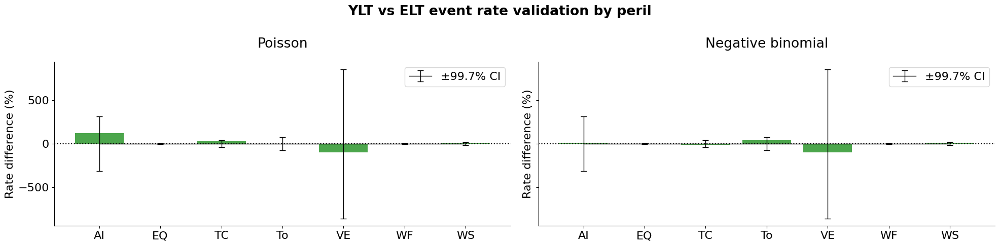
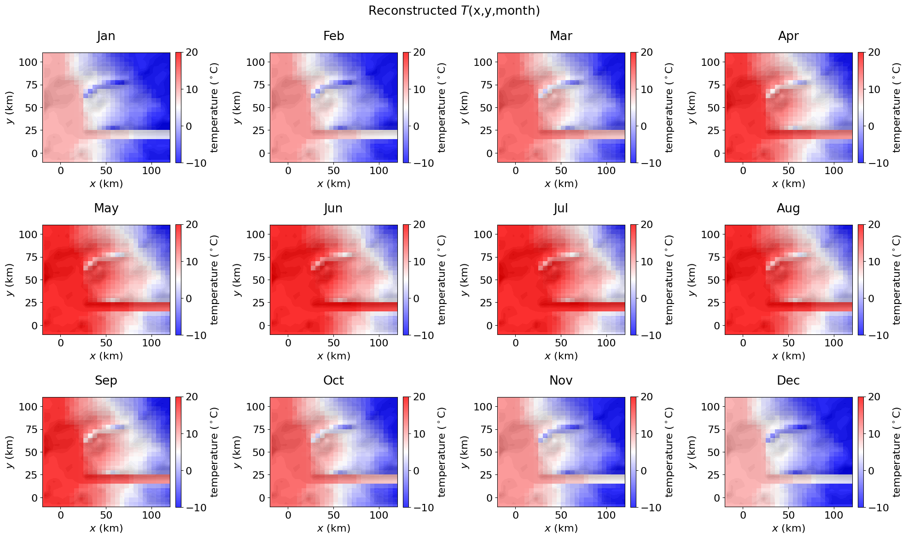
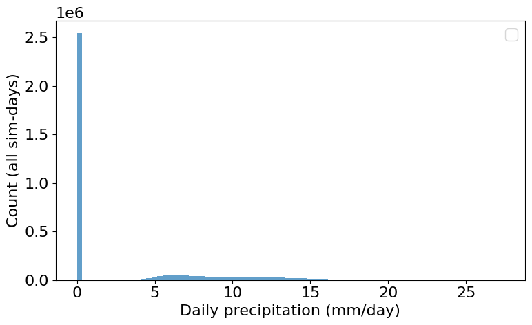
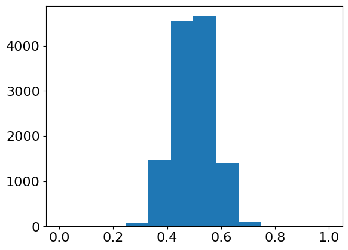
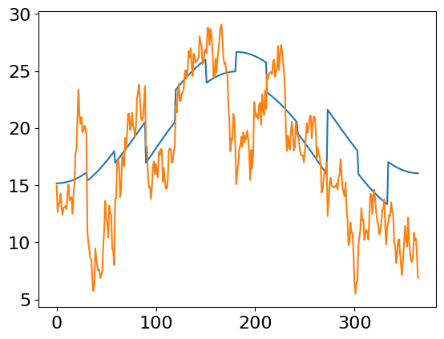
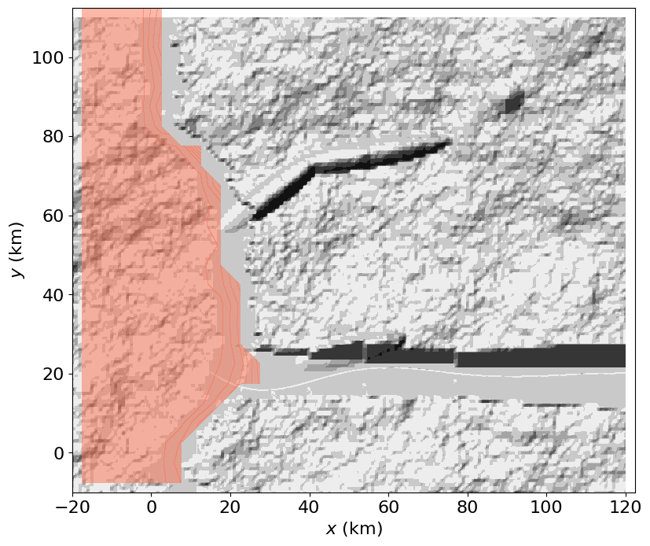

Tutorial 3: Implementing risk dynamics in the GenMR digital template
Author: Arnaud Mignan, Mignan Risk Analytics GmbH
Version: 1.2.1
Last Updated: 2026-07-08
License: AGPL-3
IN CONSTRUCTION - Please check back in late September 2026 for the official release.
A tutorial on catastrophe dynamics, demonstrating how to model chains-of-events and their cascading impacts.
v.1.2.1 (ongoing, due Sep. 2026): Implementation of the Multi-Risk Core, consisting of the modelling of chains-of-events and risk drivers within the GenMR framework (including potentially some ad-hoc parameterisations before v.1.2.3).
v.1.2.2 (Oct. 2026-Mar. 2027): Implementation of the generic hydropower-dam and dam flood model (led by UniL project partner) and integration into the digital template.
v.1.2.3 (Jan. 2027-Jun. 2027): Interaction matrix encoding, with quantitative assessment of event–event and event–environment interactions within the digital template.
import numpy as np
import pandas as pd
import copy
import matplotlib.pyplot as plt
import warnings
warnings.filterwarnings('ignore') # commented, try to remove all warnings
from GenMR import perils as GenMR_perils
from GenMR import environment as GenMR_env
from GenMR import dynamics as GenMR_dyn
from GenMR import utils as GenMR_utils
# load inputs (i.e., outputs from Tutorial 1)
file_src = 'src.pkl'
file_topoLayer = 'envLayer_topo.pkl'
file_atmoLayer = 'envLayer_atmo.pkl'
file_soilLayer = 'envLayer_soil.pkl'
file_urbLandLayer = 'envLayer_urbLand.pkl'
file_energyLayer = 'envLayer_energy.pkl'
file_socioecoLayer = 'envLayer_socioeco.pkl'
src = GenMR_utils.load_pickle2class('/io/' + file_src)
grid = copy.copy(src.grid)
topoLayer = GenMR_utils.load_pickle2class('/io/' + file_topoLayer)
atmoLayer = GenMR_utils.load_pickle2class('/io/' + file_atmoLayer)
soilLayer = GenMR_utils.load_pickle2class('/io/' + file_soilLayer)
urbLandLayer = GenMR_utils.load_pickle2class('/io/' + file_urbLandLayer)
energyLayer = GenMR_utils.load_pickle2class('/io/' + file_energyLayer)
socioecoLayer = GenMR_utils.load_pickle2class('/io/' + file_socioecoLayer)
xmin, xmax, ymin, ymax = grid.xmin, grid.xmax, grid.ymin, grid.ymax
GenMR_env.plot_EnvLayers([topoLayer, atmoLayer, soilLayer, urbLandLayer, energyLayer,
socioecoLayer], file_ext = 'jpg', topo_bool = True)

# load inputs (i.e., outputs from Tutorial 2)
ELT = pd.read_parquet('io/ELT.parquet')
ELT = ELT.dropna(subset=['lbd', 'loss'])
perils = ELT['ID'].unique()
ELT
| ID | srcID | evID | S | lbd | loss | |
|---|---|---|---|---|---|---|
| 0 | AI | impact1 | AI1 | 10.000000 | 2.657777e-06 | 2.605143e+00 |
| 1 | AI | impact2 | AI2 | 10.000000 | 2.657777e-06 | 0.000000e+00 |
| 2 | AI | impact3 | AI3 | 10.000000 | 2.657777e-06 | 0.000000e+00 |
| 3 | AI | impact4 | AI4 | 100.000000 | 2.509457e-07 | 1.930789e+10 |
| 4 | AI | impact5 | AI5 | 100.000000 | 2.509457e-07 | 6.631966e+09 |
| 5 | AI | impact6 | AI6 | 100.000000 | 2.509457e-07 | 7.254955e+09 |
| 6 | AI | impact7 | AI7 | 100.000000 | 2.509457e-07 | 5.730261e+05 |
| 7 | AI | impact8 | AI8 | 1000.000000 | 4.212292e-08 | 4.193045e+06 |
| 8 | AI | impact9 | AI9 | 1000.000000 | 4.212292e-08 | 4.612970e+10 |
| 9 | AI | impact10 | AI10 | 1000.000000 | 4.212292e-08 | 1.419336e+10 |
| 13 | EQ | fault1 | EQ1 | 6.000000 | 6.855726e-03 | 8.407242e+06 |
| 14 | EQ | fault2 | EQ2 | 6.000000 | 6.855726e-03 | 7.353930e+09 |
| 15 | EQ | fault1 | EQ3 | 6.000000 | 6.855726e-03 | 1.735134e+05 |
| 16 | EQ | fault1 | EQ4 | 6.100000 | 5.445696e-03 | 3.612260e+05 |
| 17 | EQ | fault1 | EQ5 | 6.100000 | 5.445696e-03 | 1.032197e+05 |
| 18 | EQ | fault1 | EQ6 | 6.100000 | 5.445696e-03 | 5.868966e+06 |
| 19 | EQ | fault1 | EQ7 | 6.200000 | 6.488506e-03 | 1.866050e+07 |
| 20 | EQ | fault1 | EQ8 | 6.200000 | 6.488506e-03 | 2.331507e+05 |
| 21 | EQ | fault1 | EQ9 | 6.300000 | 3.436002e-03 | 2.595636e+07 |
| 22 | EQ | fault1 | EQ10 | 6.300000 | 3.436002e-03 | 6.388565e+05 |
| 23 | EQ | fault1 | EQ11 | 6.300000 | 3.436002e-03 | 6.388565e+05 |
| 24 | EQ | fault1 | EQ12 | 6.400000 | 4.093970e-03 | 2.420586e+06 |
| 25 | EQ | fault1 | EQ13 | 6.400000 | 4.093970e-03 | 1.922223e+07 |
| 26 | EQ | fault2 | EQ14 | 6.500000 | 3.251956e-03 | 2.608644e+10 |
| 27 | EQ | fault1 | EQ15 | 6.500000 | 3.251956e-03 | 1.576180e+06 |
| 28 | EQ | fault1 | EQ16 | 6.600000 | 5.166241e-03 | 3.719422e+07 |
| 29 | EQ | fault1 | EQ17 | 6.700000 | 4.103691e-03 | 6.402894e+07 |
| 30 | EQ | fault1 | EQ18 | 6.800000 | 3.259678e-03 | 7.158208e+06 |
| 31 | EQ | fault1 | EQ19 | 6.900000 | 2.589254e-03 | 5.777673e+07 |
| 32 | EQ | fault1 | EQ20 | 7.000000 | 2.056718e-03 | 2.195578e+08 |
| 41 | TC | stormtrack1 | TC1 | 40.000000 | 2.841439e-04 | 4.003226e+10 |
| 42 | TC | stormtrack2 | TC2 | 50.000000 | 1.637893e-04 | 7.559231e+10 |
| 43 | TC | stormtrack3 | TC3 | 60.000000 | 4.064719e-05 | 1.973294e+11 |
| 44 | TC | stormtrack4 | TC4 | 60.000000 | 4.064719e-05 | 3.261860e+11 |
| 45 | TC | stormtrack5 | TC5 | 70.000000 | 3.110718e-05 | 4.358703e+11 |
| 46 | To | vortexline1 | To1 | 3.000000 | 4.537519e-05 | 0.000000e+00 |
| 47 | To | vortexline2 | To2 | 3.000000 | 4.537519e-05 | 0.000000e+00 |
| 48 | To | vortexline3 | To3 | 3.000000 | 4.537519e-05 | 0.000000e+00 |
| 49 | To | vortexline4 | To4 | 4.000000 | 5.712399e-06 | 0.000000e+00 |
| 50 | To | vortexline5 | To5 | 4.000000 | 5.712399e-06 | 1.416740e+10 |
| 51 | To | vortexline6 | To6 | 4.000000 | 5.712399e-06 | 7.348262e+09 |
| 52 | To | vortexline7 | To7 | 5.000000 | 7.191484e-07 | 2.466552e+10 |
| 53 | To | vortexline8 | To8 | 5.000000 | 7.191484e-07 | 2.123567e+10 |
| 54 | To | vortexline9 | To9 | 5.000000 | 7.191484e-07 | 2.714532e+03 |
| 55 | VE | volcano1 | VE1 | 1.000000 | 7.303024e-07 | 2.086858e-03 |
| 56 | VE | volcano1 | VE2 | 3.162278 | 3.415881e-07 | 7.510737e+04 |
| 57 | VE | volcano1 | VE3 | 10.000000 | 1.597728e-07 | 1.795838e+09 |
| 58 | WF | forest | WF1 | 10000.000000 | 1.062953e-02 | 2.616843e+10 |
| 59 | WF | forest | WF2 | 10000.000000 | 1.062953e-02 | 1.926400e+06 |
| 60 | WF | forest | WF3 | 10000.000000 | 1.062953e-02 | 0.000000e+00 |
| 61 | WF | forest | WF4 | 10000.000000 | 1.062953e-02 | 0.000000e+00 |
| 62 | WF | forest | WF5 | 10000.000000 | 1.062953e-02 | 0.000000e+00 |
| 63 | WF | forest | WF6 | 10000.000000 | 1.062953e-02 | 0.000000e+00 |
| 64 | WF | forest | WF7 | 31622.776602 | 5.158744e-03 | 9.511397e+09 |
| 65 | WF | forest | WF8 | 31622.776602 | 5.158744e-03 | 7.442482e+09 |
| 66 | WF | forest | WF9 | 31622.776602 | 5.158744e-03 | 8.181142e+09 |
| 67 | WF | forest | WF10 | 100000.000000 | 3.755478e-03 | 1.504560e+08 |
| 68 | WS | atmosphere | WS1 | 45.000000 | 2.741867e-03 | 5.622653e+10 |
| 69 | WS | atmosphere | WS2 | 50.000000 | 1.746819e-05 | 1.061373e+11 |
1. Time-series modelling
1.1. Standard year loss table (YLT) generation
Dynamic catastrophe risk assessment requires modelling the temporal occurrence of events.
The first step is to transform the Event Loss Table (ELT; introduced in Tutorial 2) into a standard Year Loss Table (YLT), which explicitly represents the sequence of events occurring within each simulated year. This transformation is performed using the gen_YLT() function. The term standard is used to distinguish a YLT derived directly from an ELT from the more sophisticated approaches described in Section 2, where events may interact with one another and with the environment.
For each peril, an event count distribution must be specified. By default, event counts are assumed to follow a Poisson distribution, representing independent event occurrences. Alternatively, a negative binomial distribution can be used to model event clustering, as is observed for example for tropical cyclones (TC).
As the number of simulated years (Nsim) increases, the Average Annual Loss (AAL) estimated from the YLT should converge to the AAL obtained from the ELT for both count distributions. This is because the negative binomial distribution preserves the expected annual event count, while allowing for greater variability in the number of events per year.
Nsim = int(1e5) # number of year-simulations, user-defined
AAL_ELT = np.sum(ELT['lbd'] * ELT['loss']) * 1e-6
## 1. Standard Poisson sampling
countDistr = {peril: 'Poisson' for peril in perils}
YLT_poi = GenMR_dyn.gen_YLT(ELT, Nsim, countDistr)
AAL_YLT_poi = np.sum(YLT_poi['loss']) / Nsim * 1e-6
annual_loss_poi = YLT_poi.groupby('simID')['loss'].sum().reindex(np.arange(1, Nsim+1), fill_value=0) # fill gaps
SE_poi = annual_loss_poi.std() / np.sqrt(Nsim) * 1e-6
print(f'AAL ELT (M. $): {AAL_ELT:.2f}')
print('** POISSON **')
print(f'AAL YLT Poisson (M. $): {AAL_YLT_poi:.3f} ± {3*SE_poi:.2f} (99.7% CI)')
print(f'Within tolerance: {abs(AAL_ELT - AAL_YLT_poi) <= 3 * SE_poi}')
## 2. Incl. peril-based clustering option
countDistr = {peril: 'Poisson' for peril in perils}
countDistr['TC'] = 'negative binomial' # clustering for specified perils
# overdispersion parameter: phi = var/lbd - 1
clustering_phi = {
'TC': .91 # from Mignan (2025, CUP textbook)
}
YLT_nb = GenMR_dyn.gen_YLT(ELT, Nsim, countDistr, clustering_phi)
AAL_YLT_nb = np.sum(YLT_nb['loss']) / Nsim * 1e-6
annual_loss_nb = YLT_nb.groupby('simID')['loss'].sum().reindex(np.arange(1, Nsim+1), fill_value=0)
SE_nb = annual_loss_nb.std() / np.sqrt(Nsim) * 1e-6
print('** NEGATIVE BINOMIAL (for selected perils) **')
print(f'AAL YLT nb (M. $): {AAL_YLT_nb:.3f} ± {3*SE_nb:.3f} (99.7% CI)')
print(f'Within tolerance: {abs(AAL_ELT - AAL_YLT_nb) <= 3*SE_nb}')
AAL ELT (M. $): 759.92
** POISSON **
AAL YLT Poisson (M. $): 802.744 ± 61.11 (99.7% CI)
Within tolerance: True
** NEGATIVE BINOMIAL (for selected perils) **
AAL YLT nb (M. $): 790.009 ± 55.164 (99.7% CI)
Within tolerance: True
def validation_sim_rates(ELT, YLT, Nsim, label, ax, phi_dict = None):
perils = ELT['ID'].unique()
diff = []
tol = []
for peril in perils:
indperil = ELT['ID'] == peril
lbd = ELT.loc[indperil, 'lbd'].sum()
rate_YLT = YLT[YLT['evID'].isin(ELT.loc[indperil, 'evID'])].shape[0] / Nsim
diff.append((rate_YLT - lbd) / lbd * 100)
phi = phi_dict[peril] if (phi_dict and peril in phi_dict) else 0.
tol.append(3 * np.sqrt(lbd * (1 + phi) / Nsim) / lbd * 100) # 3 * SE
colors = ['tomato' if abs(d) > t else 'green' for d, t in zip(diff, tol)]
ax.bar(perils, diff, color=colors, alpha = .7)
ax.errorbar(perils, [0] * len(perils), yerr = tol, color = 'black', capsize=4, lw=1, label='±99.7% CI')
ax.axhline(0, color='black', linestyle = 'dotted')
ax.set_ylabel('Rate difference (%)')
ax.set_title(label, pad = 20)
ax.spines['right'].set_visible(False)
ax.spines['top'].set_visible(False)
ax.legend()
plt.rcParams['font.size'] = '16'
fig, ax = plt.subplots(1, 2, figsize=(20, 5), sharey = True)
validation_sim_rates(ELT, YLT_poi, Nsim, 'Poisson', ax[0])
validation_sim_rates(ELT, YLT_nb, Nsim, 'Negative binomial', ax[1])
fig.suptitle('YLT vs ELT event rate validation by peril', fontweight='bold')
plt.tight_layout();

1.2. Seasonality implementation
In the context of dynamic catastrophe risk modelling, the occurrence time of simulated events must be specified. It is defined as t in the Year Event Table (YET) and expressed as a decimal year in the interval (0, 1). Prior to the implementation of event interactions (see Section 2), event occurrences may either be sampled from a uniform distribution or follow a prescribed seasonal cycle. Here, seasonality is driven by the Energy Balance Climate Model (EBCM) introduced in Tutorial 1 on environmental layers. The same EBCM framework was also used in Tutorial 2 to illustrate the emergence of heatwaves (HW) and droughts (Dr).
In this tutorial, the EBCM is used to generate seasonality over the entire year, from which the occurrence times of HW and Dr events are derived. Primary heavy rainfall (HR) events, introduced ad hoc in Tutorial 2, are now modelled explicitly to illustrate their relationship with heatwaves and droughts through alternating atmospheric circulation regimes. Additional HR events triggered by individual storms may be incorporated later in Section 2. The term heavy rainfall is used instead of rainstorm because HR is represented here as a prolonged, month-scale meteorological forcing rather than as an individual multi-day storm event. Such storm-related rainfall events will be considered separately, as rainfall components associated with windstorms (WS) or tropical cyclones (TC).
ONGOING DEVELOPMENT…
# consider only one YLT: poisson or incl. negative binomial
YLT = YLT_poi.copy()
YLT['ID'] = YLT['evID'].str[:2]
year = 0 # could be the current or next year, e.g., 2027 - only cosmetic at this stage
# (see long-term trend section for year relevance)
## random uniform time (if not seasonal peril) ##
# WARNING: all perils attributed random uniform time in first step - some to be overwritten in the next cell
YLT['t'] = year + np.random.uniform(0, 1, size = len(YLT))
YLT = YLT[['simID', 'evID', 'ID', 't', 'S', 'loss']]
## EBCM seasonal driver (climatical & meteorological perils) ##
days_per_mon = GenMR_utils.days_per_mon
ndays = sum(GenMR_utils.days_per_mon) # 365
moni = np.array([m + .5 + d / days_per_mon[m] for m, nday in enumerate(days_per_mon) for d in range(nday)])
# t = (mon - .5)/12 in calc_T0_EBCM()
# atmoLayer.T not used, instead: from month to day resolution & spatial footprint downscaled for fast computation
f = 50
grid_downscaled = GenMR_env.downscale_RasterGrid(grid, f, appl = 'pooling')
topoLayer_downscaled = copy.deepcopy(topoLayer)
topoLayer_downscaled.grid = grid_downscaled
topoLayer_downscaled.z = GenMR_utils.pooling(topoLayer.z, f, method = 'mean')
T0, _, _ = GenMR_env.EnvLayer_atmo.calc_T0_EBCM(grid.lat_deg, moni)
topo_z_corr = topoLayer_downscaled.z.copy() * 1e-3 # m to km
topo_z_corr[topo_z_corr < 0.] = 0 # water surface at z=0
T = GenMR_env.EnvLayer_atmo.calc_T_z(topo_z_corr[None, :, :], T0[:, None, None], \
lapse_rate = atmoLayer.par['lapse_rate_degC/km'])
# plot mean monthly T
month_names = ['Jan','Feb','Mar','Apr','May','Jun','Jul','Aug','Sep','Oct','Nov','Dec']
day_bounds = np.concatenate([[0], np.cumsum(days_per_mon)]) # cum. day boundaries, length 13
plt.rcParams['font.size'] = '16'
fig, axes = plt.subplots(3, 4, figsize=(20, 12))
axes = axes.ravel()
for ax, month in zip(axes, range(1, 13)):
start, end = day_bounds[month - 1], day_bounds[month]
T_mon = T[start:end].mean(axis=0)
ax.contourf(grid_downscaled.xx, grid_downscaled.yy, GenMR_env.ls.hillshade(topoLayer_downscaled.z, \
vert_exag=.1), cmap='gray')
imgT = ax.pcolormesh(grid_downscaled.xx, grid_downscaled.yy, T_mon, cmap = 'bwr', \
vmin=-10, vmax=20, alpha = .8)
ax.set_title(month_names[month - 1], pad = 20)
ax.set_xlabel('$x$ (km)')
ax.set_ylabel('$y$ (km)')
ax.set_xlim(xmin, xmax)
ax.set_ylim(ymin, ymax)
ax.set_aspect(1)
fig.colorbar(imgT, ax = ax, fraction = .04, pad = .04, label = 'temperature ($^\circ$C)')
plt.suptitle(r'Reconstructed $T$(x,y,month)')
plt.tight_layout();

## Seasonal climatic perils ##
# shared delta-temperature time series for HW, Dr and HR
Ndays = T.shape[0]
DT_peryr, DT_adv_month, DT_adv_daily = GenMR_dyn.sample_DT_stoch(src.par['HW'], Nsim, Ndays)
# NB: the following peril parameters are selected so that all size (duration)-distributions are reasonably close
# for illustration purposes. In a generic context, there is no clear constraint on these values.
print('HW modelling')
src.par['HW']['T_th'] = 32 # Minimum temperature threshold (°C)
YET_HW, catalog_hazFp_HW = GenMR_dyn.gen_YET_HW(T0, T, src.par['HW'], DT_peryr, DT_adv_daily, Nsim)
print('Dr/HR modelling')
src.par['Dr']['hw_th'] = .1 # %tage of normal soil water content hw_fc_m to be declated Dr
src.par['Dr']['Dr_stress_mean'] = .3 # mean fraction of hw_fc depleted before year starts
src.par['Dr']['Dr_stress_k'] = 4. # Beta concentration: higher = tighter around the mean
Dr_stress = GenMR_dyn.sample_Dr_stress(src.par['Dr'], Nsim)
src.par['Dr']['HR_th'] = 400 # mm/month
moni = np.arange(12)+1
T0_mo, _, _ = GenMR_env.EnvLayer_atmo.calc_T0_EBCM(src.par['Dr']['lat_deg'], moni)
YET_Dr, YET_HR = GenMR_dyn.gen_YET_Dr_HR(T0_mo, src.par['Dr'], atmoLayer.par, soilLayer.par, \
DT_peryr, DT_adv_month, Dr_stress, Nsim)
HW modelling
98000/100000
## plots ##
n_sample = 20 # number of plotted time series (simulation years)
seed = 1 # for time series sampling
sample_ID = 7 # which one of the sampled time series to explore (index)
np.random.seed(seed)
all_simIDs = np.unique(np.concatenate([
YET_HW['simID'].values, YET_Dr['simID'].values, YET_HR['simID'].values]))
sample = np.random.choice(all_simIDs, size = min(n_sample, len(all_simIDs)), replace = False)
sample.sort()
plt.rcParams['font.size'] = '16'
fig, ax = plt.subplots(2,2, figsize=(20, 15))
gs = ax[0,0].get_gridspec()
ax[0,0].remove()
ax00 = fig.add_subplot(gs[0,0], projection='polar')
ax00.set_theta_zero_location('N')
ax00.set_theta_direction(-1)
bins = np.linspace(0, 2*np.pi, 13) # 12 monthly bins around circle
width = 2 * np.pi / 12
for df, color, label in [(YET_HW, GenMR_utils.col_peril('HW'), 'HW'),
(YET_Dr, GenMR_utils.col_peril('Dr'), 'Dr'),
(YET_HR, GenMR_utils.col_peril('HR'), 'HR')]:
if df.empty:
continue
theta = df['t'].values * 2*np.pi
counts, _ = np.histogram(theta, bins=bins)
counts = counts / counts.sum() # normalized
centers = (bins[:-1] + bins[1:]) / 2
ax00.plot(np.append(centers, centers[0]), np.append(counts, counts[0]),
color=color, marker='o', label=label, lw=2)
ax00.fill(np.append(centers, centers[0]), np.append(counts, counts[0]),
color=color, alpha=.1)
ax00.set_xticks(np.linspace(0, 2*np.pi, 12, endpoint=False))
ax00.set_xticklabels(GenMR_utils.month_labels_short)
ax00.set_title('Seasonal occurrence by climatic peril (normalized)', pad = 20)
ax00.legend(loc='upper right', bbox_to_anchor=(1.3, 1.1))
## event size distributions ##
S_HW, Sdistr_HW = GenMR_utils.calc_Sdistr_empirical(YET_HW, 'S')
S_Dr, Sdistr_Dr = GenMR_utils.calc_Sdistr_empirical(YET_Dr, 'S')
S_HR, Sdistr_HR = GenMR_utils.calc_Sdistr_empirical(YET_HR, 'S')
ax[0,1].scatter(S_HR /12*Ndays, Sdistr_HR, color = GenMR_utils.col_peril('HR'), alpha = .1, label ='HR')
ax[0,1].scatter(S_HW, Sdistr_HW, color = GenMR_utils.col_peril('HW'), alpha = .1, label ='HW')
ax[0,1].scatter(S_Dr /12*Ndays, Sdistr_Dr, color = GenMR_utils.col_peril('Dr'), alpha = .1, label ='Dr')
ax[0,1].set_yscale('log')
ax[0,1].set_xlabel('Event duration (da)')
ax[0,1].set_ylabel('Annual rate')
ax[0,1].set_title('Simulated size distributions', pad = 20)
ax[0,1].spines['right'].set_visible(False)
ax[0,1].spines['top'].set_visible(False)
ax[0,1].legend()
## sampled time series ##
for r in range(len(sample)):
ax[1,0].axhline(r, color='gray', lw=.5, alpha=.3, zorder=0)
ax[1,0].axhspan(sample_ID - .4, sample_ID + .4, color='grey', alpha = .1, zorder = 0)
for df, color, label, dur_norm, dr in [(YET_HW, GenMR_utils.col_peril('HW'), 'HW', Ndays, .2),
(YET_Dr, GenMR_utils.col_peril('Dr'), 'Dr', 12, -.2),
(YET_HR, GenMR_utils.col_peril('HR'), 'HR', 12, 0.)]:
sub = df[df['simID'].isin(sample)]
row = np.searchsorted(sample, sub['simID'].values)
t_start = sub['t'].values
t_end = t_start + sub['S'].values / dur_norm
for r, t0, t1 in zip(row, t_start, t_end):
ax[1,0].plot([t0, t1], [r + dr, r + dr], color=color, lw=3, solid_capstyle='butt', alpha=.8, zorder=2)
ax[1,0].plot([], [], color=color, lw=3, label=label)
for m in range(1, 12):
ax[1,0].axvline(m/12, color='grey', lw=.5, ls=':', alpha=.5, zorder=0)
ax[1,0].set_yticks(range(len(sample)))
ax[1,0].set_yticklabels(sample)
ax[1,0].set_xlabel('Decimal year')
ax[1,0].set_ylabel('simID')
ax[1,0].set_xlim(0, 1)
ax[1,0].spines['right'].set_visible(False)
ax[1,0].spines['top'].set_visible(False)
ax[1,0].legend()
ax[1,0].set_title(f'Time series (subset of {n_sample})', pad = 20)
## Dr/HR process visualisation ##
sim = sample[sample_ID] - 1
w_subs, w_asc = atmoLayer.par['vz_subs_asc']
z_tropo = GenMR_env.EnvLayer_atmo.calc_z_tropopause(src.par['Dr']['lat_deg'])
par_rain = {'p0': atmoLayer.par['p0_kPa'], 'lapse_rate': atmoLayer.par['lapse_rate_degC/km'],
'eta_rain': atmoLayer.par['eta_rain'], 'zmax_km': z_tropo}
Smax = soilLayer.par['hw_max_m'] * 1e3
Dr_th = soilLayer.par['hw_fc_m'] * 1e3 * src.par['Dr']['hw_th']
hw0 = (1. - Dr_stress[sim]) * soilLayer.par['hw_fc_m'] * 1000.
T_mo_stoch = T0_mo + DT_peryr[sim] + DT_adv_month[sim]
cyclonic = DT_adv_month[sim] < 0
w_mo = np.where(cyclonic, w_asc, w_subs)
ET0 = GenMR_perils.calc_PET(T_mo_stoch, src.par['Dr']['lat_deg'], cloudy=cyclonic)
I_rain = GenMR_perils.gen_precipitation(T_mo_stoch, w_mo, par_rain)
I_rain_mo = I_rain * GenMR_utils.days_per_mon
S_t = GenMR_perils.update_soil_moisture(I_rain_mo, ET0, hw0, Smax)
months = np.arange(1, 13)
ax[1,1].bar(months, I_rain_mo, alpha=.4, color='blue')
ax[1,1].axhline(src.par['Dr']['HR_th'], color='darkblue', ls='solid', lw = 2, label='HR threshold')
ax[1,1].set_xlabel('Month')
ax[1,1].set_ylabel('Precipitation (mm/month)')
ax[1,1].set_ylim(0, 1.2 * np.max(I_rain_mo))
ax[1,1].spines['right'].set_visible(False)
ax[1,1].spines['top'].set_visible(False)
ax[1,1].legend()
ax2 = ax[1,1].twinx()
ax2.plot(months, S_t, color = GenMR_utils.col_peril('Dr'), marker = 's', linewidth = 2)
ax2.axhline(Dr_th, color = GenMR_utils.col_peril('Dr'), linestyle = 'dashed', lw = 3, label = 'Dr threshold')
ax2.set_ylabel('Soil moisture (mm)')
ax2.spines['top'].set_visible(False)
ax2.legend()
ax[1,1].set_title(f'Water balance, simID {sim+1}', pad = 20)
for m in months[cyclonic]:
ax[1,1].axvspan(m - .5, m + .5, color='lightblue', alpha=.5)
for m in range(0, 13):
ax[1,1].axvline(m + .5, color='grey', lw=.5, ls=':', alpha=1, zorder=0)
plt.tight_layout();
def plot_Irain_distribution(T0_mo, par, atmo_par, DT_peryr, DT_adv_month, Nsim, RS_th=None):
'''
Histogram of monthly precipitation (mm/month) pooled across all simulated
years and months, to calibrate RS_th against the actual model output.
'''
w_subs, w_asc = atmo_par['vz_subs_asc']
z_tropo = GenMR_env.EnvLayer_atmo.calc_z_tropopause(par['lat_deg'])
par_rain = {'p0': atmo_par['p0_kPa'], 'lapse_rate': atmo_par['lapse_rate_degC/km'],
'eta_rain': atmo_par['eta_rain'], 'zmax_km': z_tropo}
all_rain = np.empty((Nsim, 12))
for sim in range(Nsim):
T_mo_stoch = T0_mo + DT_peryr[sim] + DT_adv_month[sim]
cyclonic = DT_adv_month[sim] < 0
w_mo = np.where(cyclonic, w_asc, w_subs)
I_rain = GenMR_perils.gen_precipitation(T_mo_stoch, w_mo, par_rain)
all_rain[sim] = I_rain * GenMR_utils.days_per_mon
fig, ax = plt.subplots(figsize=(8, 5))
ax.hist(all_rain.flatten(), bins=80, color='tab:blue', alpha=.7)
if RS_th is not None:
ax.axvline(RS_th, color='red', ls='--', label=f'RS_th = {RS_th}')
for q in [50, 90, 95, 99]:
val = np.percentile(all_rain.flatten(), q)
print(f'p{q}: {val:.1f} mm/month')
ax.set_xlabel('Monthly precipitation (mm/month)')
ax.set_ylabel('Count (all sim-months)')
ax.legend()
plt.tight_layout()
plt.show()
plot_Irain_distribution(T0_mo, src.par['Dr'], atmoLayer.par, DT_peryr, DT_adv_month, Nsim,
RS_th=src.par['Dr']['RS_th'])
p50: 0.00 mm/day
p90: 10.96 mm/day
p95: 13.09 mm/day
p99: 16.18 mm/day

day_bounds = np.concatenate([[0], np.cumsum(days_per_mon)]) # [0, 31, 59, ..., 365]
month_edges = day_bounds / 365
plt.hist(YET_HW['t'], bins = month_edges);

YET_HW['S'].max()
np.int64(42)
par = src.par['HW']
Ndays = 365
if True:
DT_peryr = np.random.normal(0, par['sigmaT_yearly'], Nsim)
days_per_mon = GenMR_utils.days_per_mon
DT_adv_daily = np.empty((Nsim, Ndays))
for sim in range(Nsim):
DT_adv_month = GenMR_perils.HazardFootprintGenerator.sample_T_advectivemodel(
np.zeros(12), par['lat_deg'])
DT_adv_daily[sim] = np.repeat(DT_adv_month, days_per_mon)
DT_stoch = DT_peryr[:, None] + DT_adv_daily
dT_daily_stoch = GenMR_perils.HazardFootprintGenerator.sample_T_AR1process(DT_stoch[sim], \
Ndays, par['T_AR1'][0], par['T_AR1'][1])
plt.plot(np.arange(365), T0+DT_stoch[0,:])
plt.plot(np.arange(365), T0+dT_daily_stoch)
[<matplotlib.lines.Line2D at 0x16e1452d0>]

fig, ax = plt.subplots(1,1, figsize=(20, 8))
ax.contourf(grid.xx, grid.yy, GenMR_env.ls.hillshade(topoLayer.z, vert_exag=.1), cmap='gray')
ax.contourf(grid_downscaled.xx, grid_downscaled.yy, catalog_hazFp_HW['HW3'], cmap = 'Reds', alpha = .5, vmin=30, vmax = 45)
ax.set_xlabel('$x$ (km)')
ax.set_ylabel('$y$ (km)')
ax.set_aspect(1)

2. Event interaction modelling
WARNING: Transition matrix encoding for the Digital Template environment and perils will be implemented in version 1.2.3 (Jan. 2027 – Jun. 2027).
This framework is currently under construction, using an ad hoc transition matrix for validation testing.
Note that the Year Event Table (YET), the simulated event sequence before event losses are assigned, is introduced in this section to model time series while initially avoiding the inclusion of losses that may be time-dependent or depend on previous events and environmental changes (addressed in a later section).
2.1. Markov process integration
In a first step, a Markov process is introduced into the YET generation. Non-Markovian processes (i.e., processes with memory) will be considered in Section 2.2.